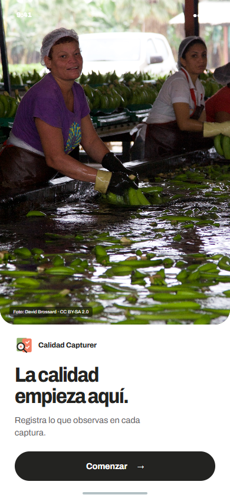
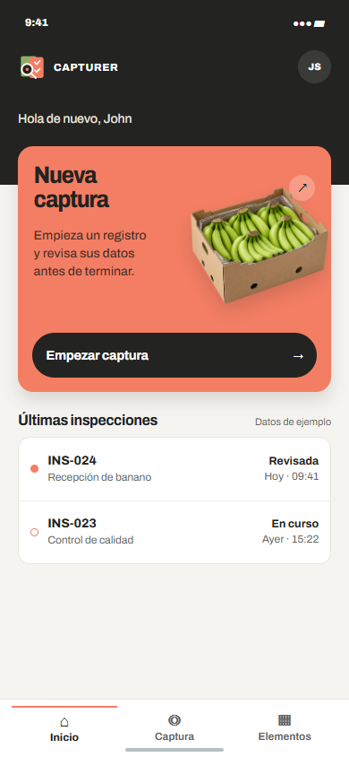
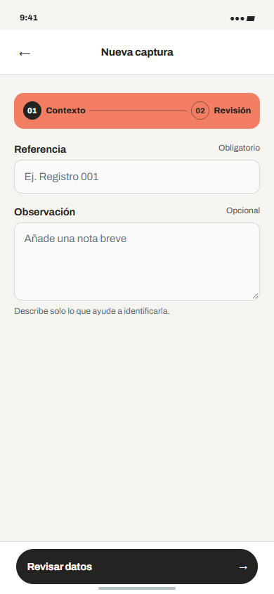
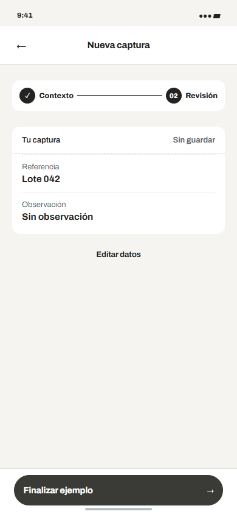

Calidad CapturerIdentidad móvil · exploración 08
Archivo Variable.
Una voz tipográfica firme para registrar con claridad.




Archivo Variable.
Una voz tipográfica firme para registrar con claridad.



